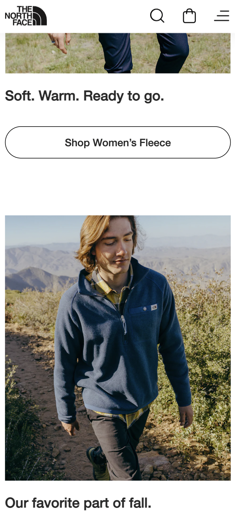
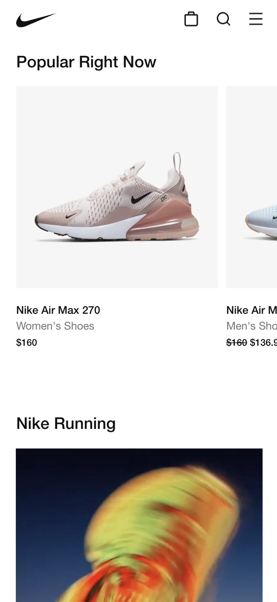
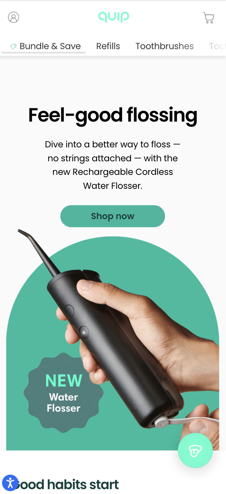

Repetition
The North Face
TheNorthFace.com This website shows a lot of great repetition throughout the page. There are different categories of products throughout the main page, but each section has the same layout. There is a picture, some text, and a button in every section that is formated the same. This helps each section feel organized, gives a sense of familiarity, and feels professional.
Proximity
Nike
Nike.com The Nike website is a great example of proximity because there are a lot of sections and a lot of text, but the proximity of the text to the pictures helps the viewer understand what text goes with what pictures and sections. This helps the site be better understood, keeps it organized, and provides a nice layout that separates information and categories well.
White Space
Quip
GetQuip.com The use of white space on this site works very well. It allows the viewer to not feel overwhelmed, gives a clean and organized feel, and that clean feel goes along with the product that the page is selling, water flossers. The site is inviting and the use of white space helps to make sure the site isn't overwhelming and gives spots for the eyes to rest.